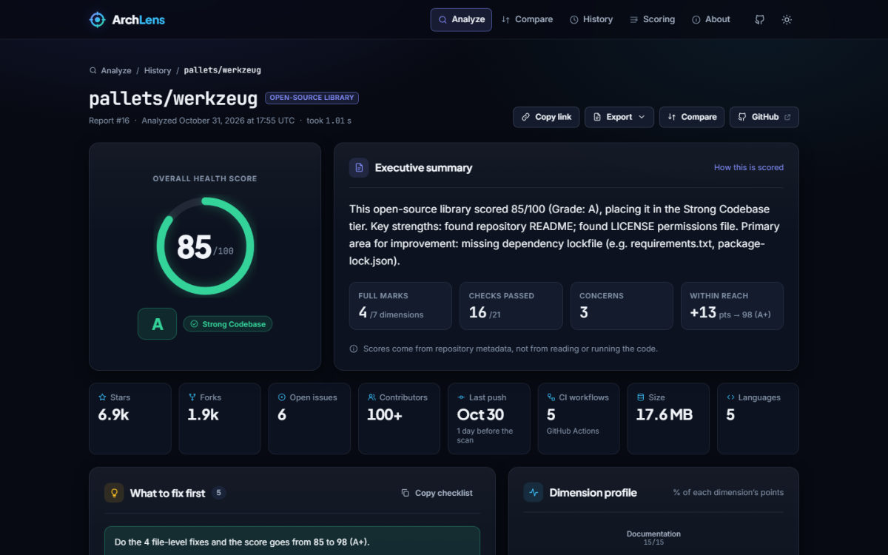
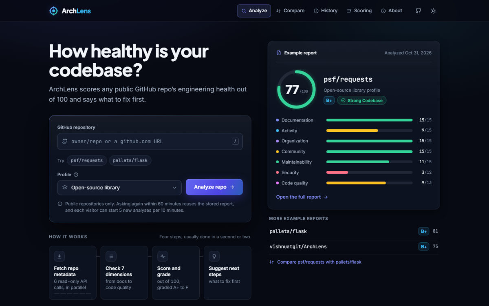

All workCase study 01 / 03
ArchLens
Scores any public GitHub repository from 0 to 100 across seven engineering dimensions, as a web app, a REST API and a CLI.
- Year
- 2026
- Built with
- FastAPI · SQLAlchemy · Docker

(01)The problem
Why it existsChecking a repository by hand means ten minutes of clicking around.
License? Tests? CI? Recent commits? Open issues? ArchLens runs that checklist in one request, shows the evidence behind every point, and turns what is missing into a prioritised list of fixes.
It reads repository metadata through the GitHub REST API and never clones the code, so an analysis takes six read-only API calls. Every new analysis is stored in SQLite, so reports can be revisited, compared and shared.
(02)How it works
From the READMEDashed bracket: each step streams progress events to the browser as NDJSON, one per GitHub call.
Fetch repo metadata. Repository stats, the root file listing, languages, contributors, commits from the last 30 days and the workflow folder, read with one shared
httpx.AsyncClientandasyncio.gather. If one call fails, the others are cancelled.Check 7 dimensions. Documentation, activity, organization, community, maintainability, security and code quality: a README, license, test folder, CI workflows, lockfile,
SECURITY.md, linter and type-checker config, recent commits and open issues.Score and grade. Points add up to 100 and map to a grade from A+ (95 and above) to F (below 35) and a health tier, with the evidence behind every point.
Suggest next steps. Each failed check becomes a fix with the points it would add, ranked, and exportable as a Markdown checklist.
(03)Key decisions
5 choices-
One shared async client, metadata only
The six GitHub calls run concurrently through one
httpx.AsyncClientshared for the app's lifetime. If one fails (a 404 on the metadata call, say), the calls still running are cancelled instead of spending more GitHub quota. -
Upstream errors become clear responses
One error shape across the web app, the API and the CLI: a missing repository is a
404 REPO_NOT_FOUND, a used-up GitHub quota a503 RATE_LIMIT_EXCEEDED, an unreachable GitHub a502 GITHUB_UNAVAILABLE, and too many analyses a429withRetry-After. -
Cache and rate-limit for a free host
A report of the same repository and profile from the last hour is reused, and each client can start 5 new analyses per 10 minutes. An analysis that fails because GitHub is down or out of quota is given back.
-
Progress from real events
POST /api/v1/analyze/streamstreams the pipeline's progress as newline-delimited JSON, one event per GitHub call, so the steps on the home page light up from what the server is actually doing, and a failed step says why. -
Scoring you can check
The
/scoringpage is generated from the scorer's own constants, and tests run the real scorer against it, so the explanation cannot drift from the code.
(04)Proof
Tests · CI · stack- pytest tests, GitHub mocked, no network
- 258
- CI on GitHub Actions: pytest, Ruff, Black
- Passing
- GitHub API calls per analysis, run concurrently
- 6
Unit tests cover the scorer, the scoring page, the evidence (the real scorer over about 900 generated repositories), the fix plan, the progress events, the GitHub client and the rate limiter. Integration tests drive every page and API endpoint, including the progress stream, through FastAPI's TestClient. CI runs
- Python 3.11+
- FastAPI
- httpx
- SQLAlchemy 2
- Alembic
- SQLite
- Jinja2
- Typer + Rich
- pytest
- Ruff
- Black
- Docker
- GitHub Actions
(05)Screenshots
From the repository

(06)Limitations
Honestly- Metadata only. It reads repository statistics and the root file listing. It does not read source files, run tests or measure coverage.
- Heuristics, not ground truth. A file earns points by existing, whatever its quality, and stars are a weak proxy for health. A low score is a list of things to look at, not a verdict.
- Capped counts. Contributors and recent commits come from one page of GitHub results, so they stop at 100.
- Single instance. The rate limiter lives in memory and resets on restart.
- Ephemeral demo storage. On the free host, reports other than the bundled examples disappear when the service restarts.
A mini SRE lab in FastAPI: it detects anomalies in its own CPU and memory, writes incident reports and restores from snapshots.